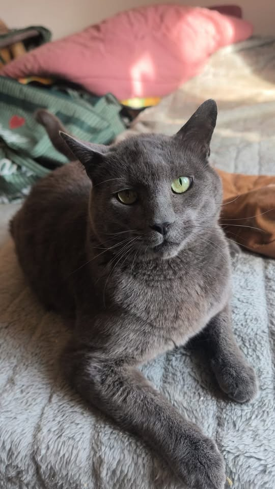

Association · Saussines et alentours, Hérault · depuis 2020
Ici, aucun chat n'est laissé de côté.
Depuis 2020, une poignée de bénévoles nourrit, soigne et trouve une famille aux chats errants de Saussines et des villages alentour.

Ils ont trouvé une famille
Quelques-unes de nos plus belles histoires.
Envie d'adopter ?
Nos chats à l'adoption sont présentés au fil de l'eau sur nos réseaux. Un coup de cœur ? Écrivez-nous.
La boutique
Nouveau : l'édition Noël, 14 dessins de chats en T-shirts, sweats, mugs et calendrier 2027. Et pour chaque adoption, −10 % sur toute la boutique.
Des produits aux couleurs des 3 Petits Chats, fabriqués en Europe. Chaque achat aide l'association à soigner et protéger les chats, et contribue à rémunérer le travail de toute l'équipe qui fait vivre la boutique.
Ouvrir la boutiqueBoutique Les Ateliers du Chat Saussinois, partenaire de l'association : une partie de chaque vente lui est reversée.Faire un don
Chaque don aide directement l'association : soins, stérilisations, croquettes, abris. Paiement sécurisé, reçu fiscal possible.
Ce que nous faisons
Pour les chats sans propriétaire de Saussines et des alentours.
Vétérinaire, stérilisation, identification.
Nourrissage et abris contre le froid et la pluie.
Chatons et chats sociables trouvent une famille.